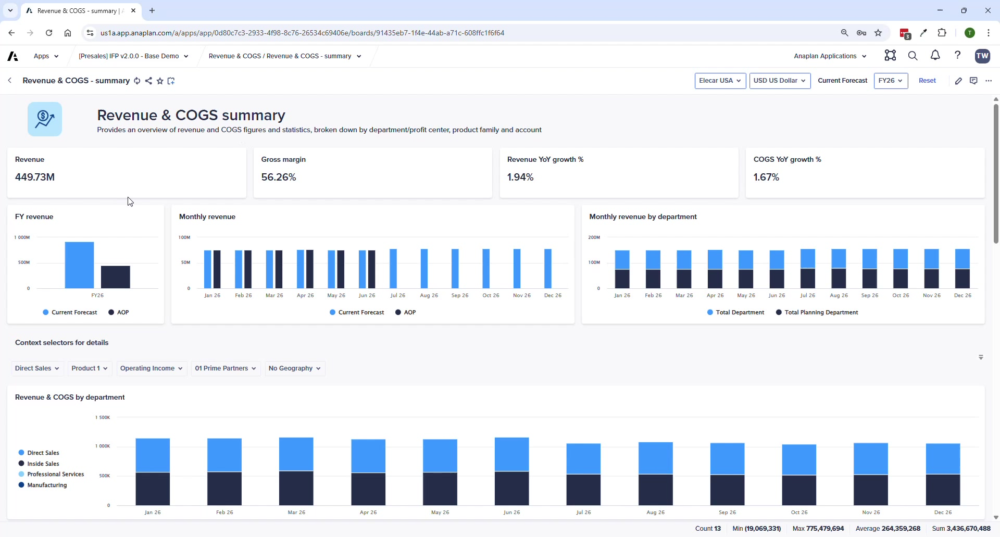
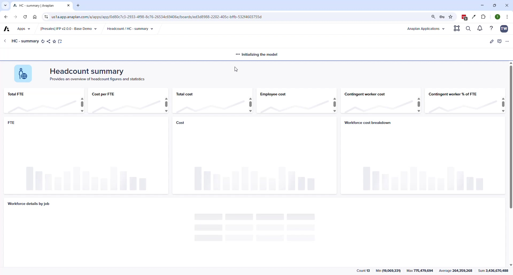
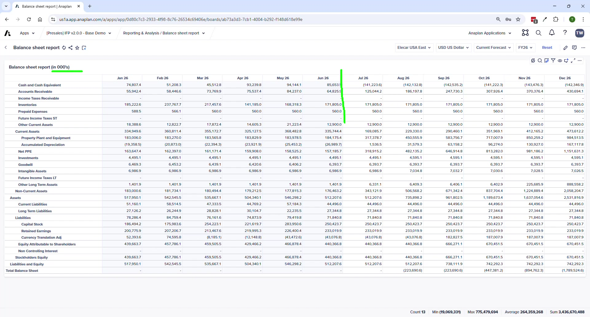
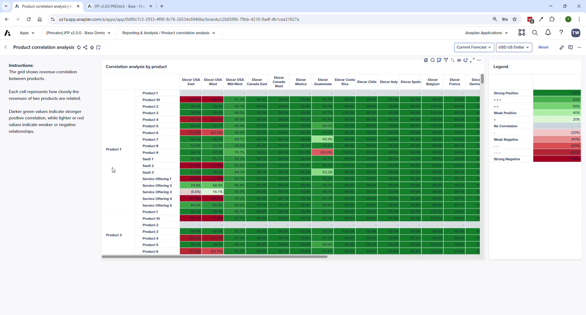
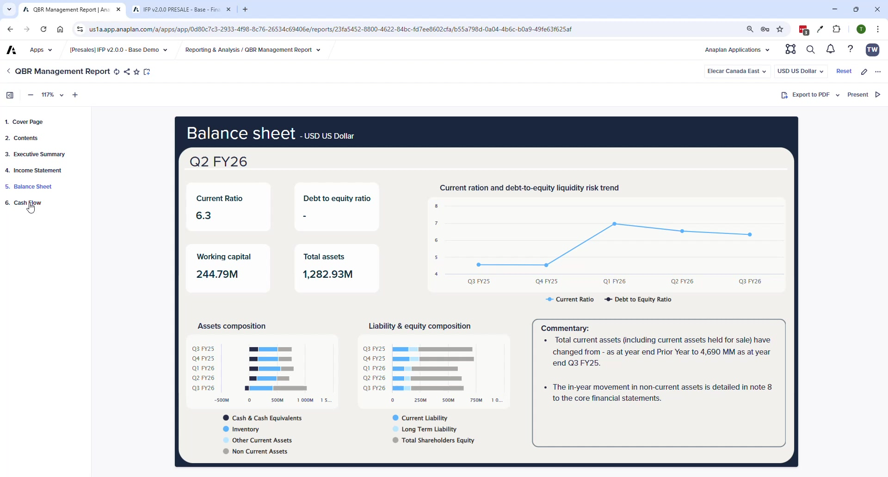

Reporting & Analysis
Financial reports, variance analysis, statistical tools, and the management reporting pack
Module 3Module Walkthrough20 min
Core Financial Reports
| Report | Purpose |
|---|---|
| Income Statement Report | Ad hoc IS analysis at account level; suppression available; analysis type switcher |
| IS Variance Analysis | Compare IS data across any two versions; analyze variances |
| Balance Sheet Report | Detailed BS at account level; closing balance = last actual ± activity entered |
| BS Variance Analysis | Compare BS data between versions |
| BS & CF Validations | Is the balance sheet in balance? Cash flow reconciliation. |
| Indirect Cash Flow | System-calculated CF + manual fine-tuning adjustments |
| Currency Variance Analysis | Isolate FX rate impact between two time periods |


New in V2.0: Statistical Analysis
Product Sales Outlier Analysis
- Statistical analysis of product-based revenue data
- Parameters: number of standard deviations, basis (mean or trend line)
- Highlights statistical outliers — useful for identifying unusual trends proactively
Product Correlation Analysis
- Analyzes correlations between products across entities and geographies
- Shows which products move together and which are independent
Management Reporting Sample



- Pre-built board-pack: cover page, P&L, Balance Sheet, Cash Flow statement
- Dynamic commentary — tagged to data, updates automatically as plan data changes
- Entity and currency selectors at top right
- Customers expected to customize for their own board pack format
Report Scaling and Display
- Most reports scaled to thousands
- Use Suppress to hide zero/unused accounts
- Switch between: Amounts · Year-over-year change · Percentage · Percent of revenue
ℹ Finance Analyst / CoPlanner
Finance Analyst is embedded in IFP v2.0 for natural language data queries (e.g., 'What drove the variance in OpEx this quarter?'). Pending full GA availability — check with your Anaplan account team for current status.